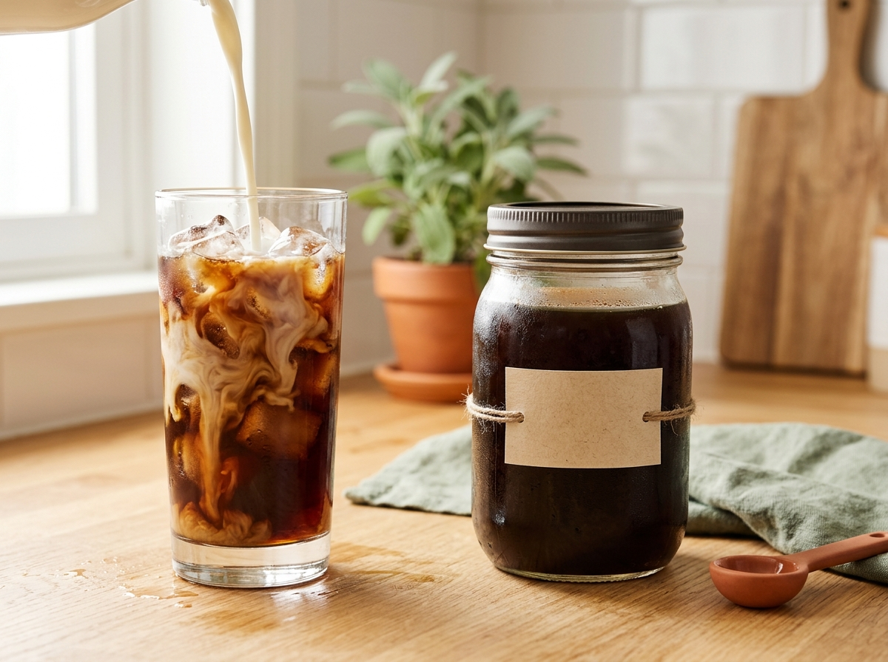
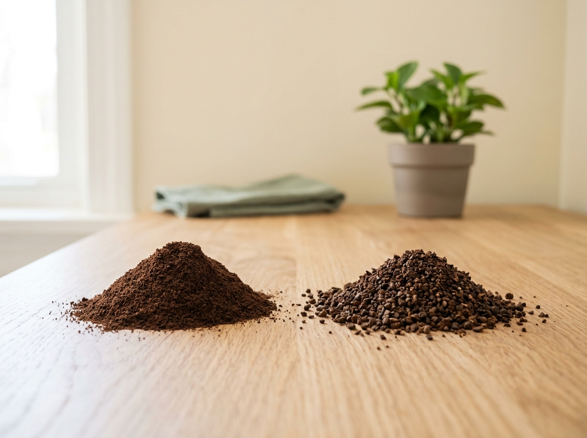
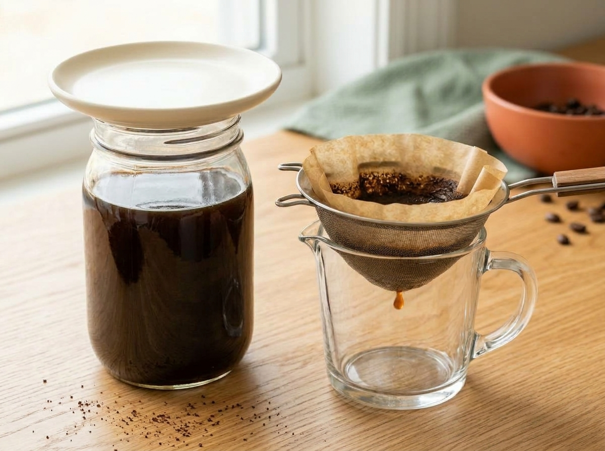

A free 15-minute mini-course for iced-coffee lovers on a small budget. Three short modules, a jar, a sieve and under €20 of extra gear.

Made with AI. This course was made with the help of AI tools. The presenter is a fictional person generated by AI: he does not exist and his voice is synthetic. All clips, images and music are AI-generated. Every factual claim was checked against sources by a human before publication.
Identify the gear you need, the right grind size and a baseline coffee-to-water ratio.
You probably own most of this already. Even if you buy everything, it stays under €20.
Cold brew is made as a concentrate that you dilute later (Module 3). Use 1 part coffee to 4 parts water, by weight: for example, 100 g of coarse coffee and 400 g (400 ml) of water. Weigh, don’t scoop: a cup of coffee grounds weighs more or less depending on the grind.

Select the right steeping time and filtering method for a batch.
Lesson video, 1 min 44, with subtitles. The presenter, clips and music are AI-generated.
Why the difference? Cold slows extraction, so fridge brewing takes longer.
Tip: let it drain on its own rather than squeezing the cloth, which can push fine particles into your coffee.

Brew a first batch of ready-to-drink cold brew using the course’s ratio, dilution and storage guidelines.
| Your cold brew is… | Try this next time |
|---|---|
| Too bitter | A coarser grind or a shorter steep |
| Too weak | More coffee or a longer steep |
| Sour | A longer steep |
| Flat, stale | A fully sealed jar with little air inside |
Six questions, no sign-up, your score and the answers at the end. Open the quiz in a new tab if it doesn’t load below.